Travaux
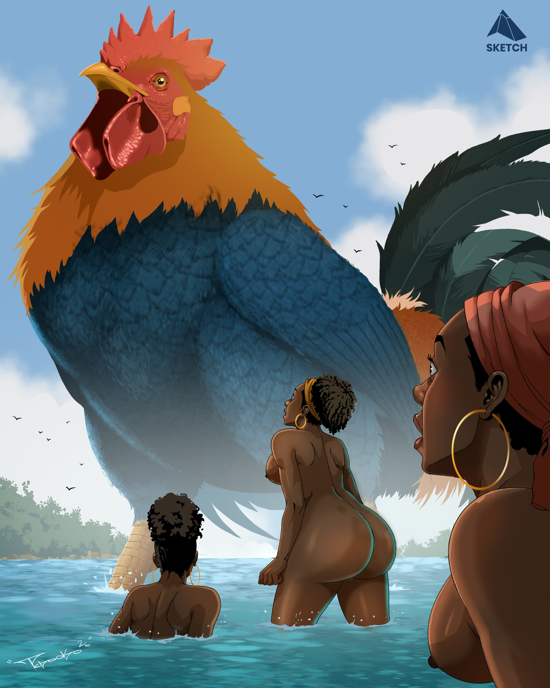
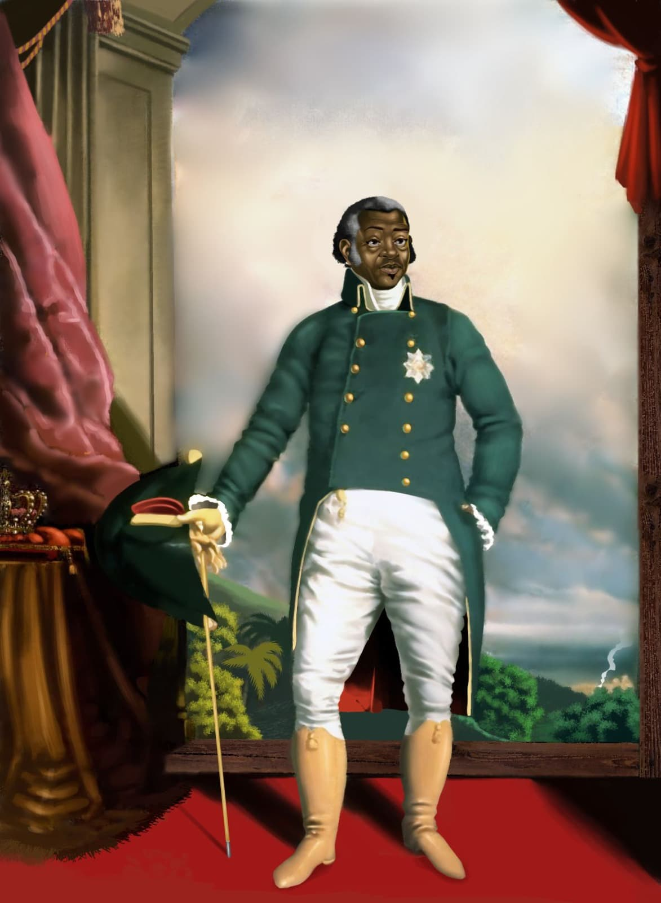
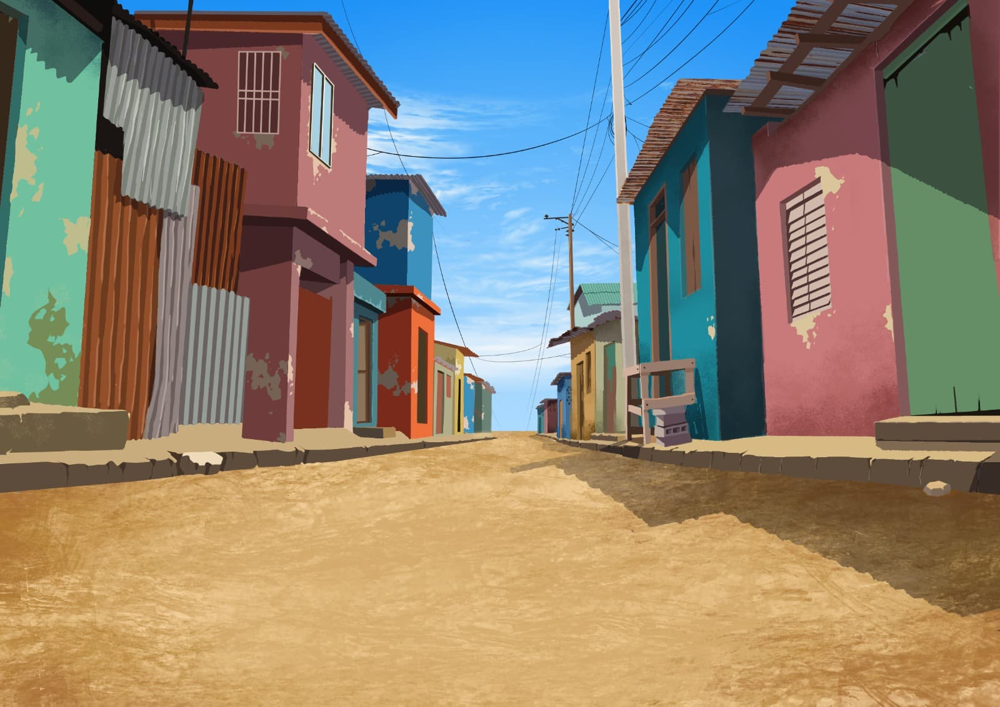
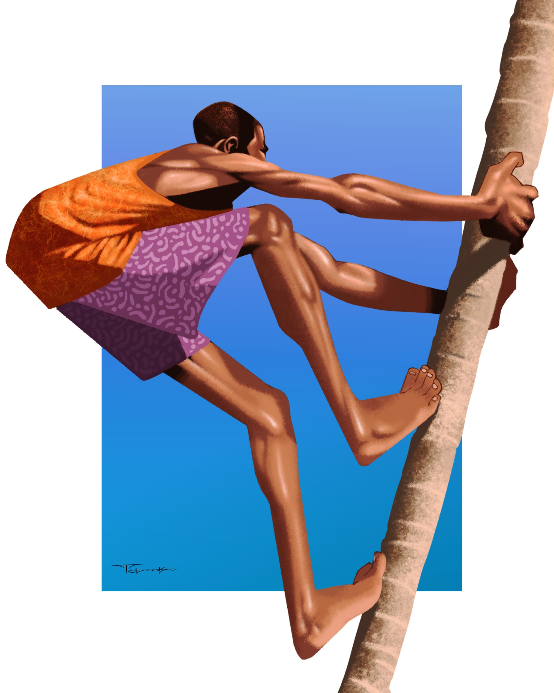

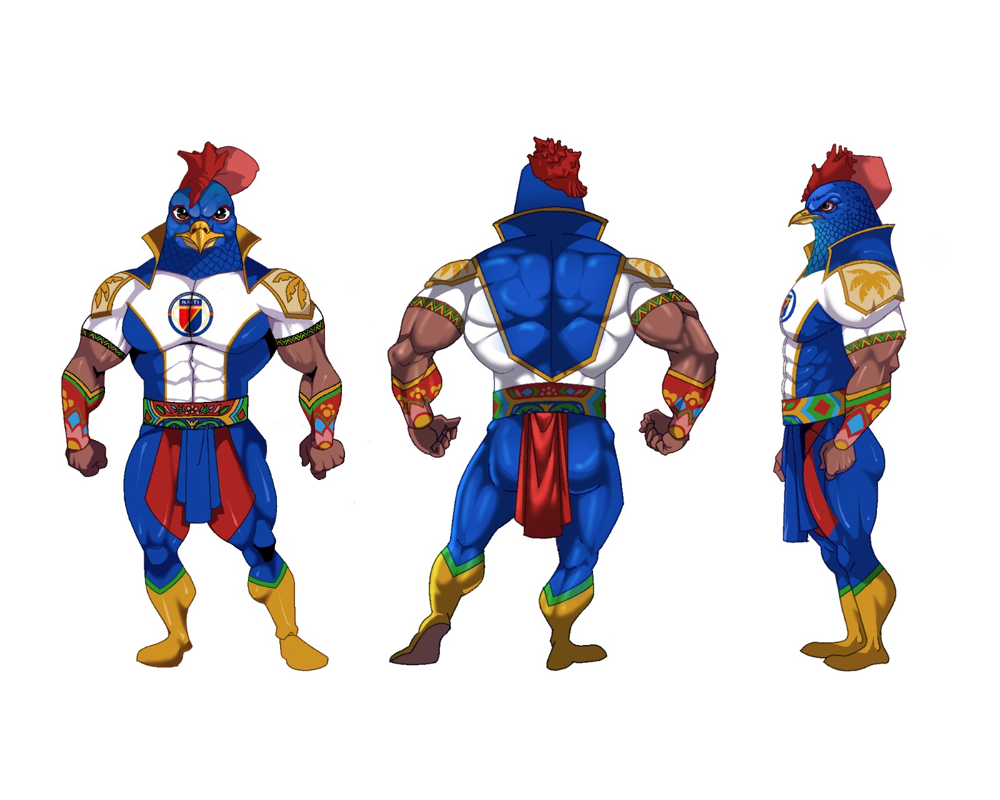
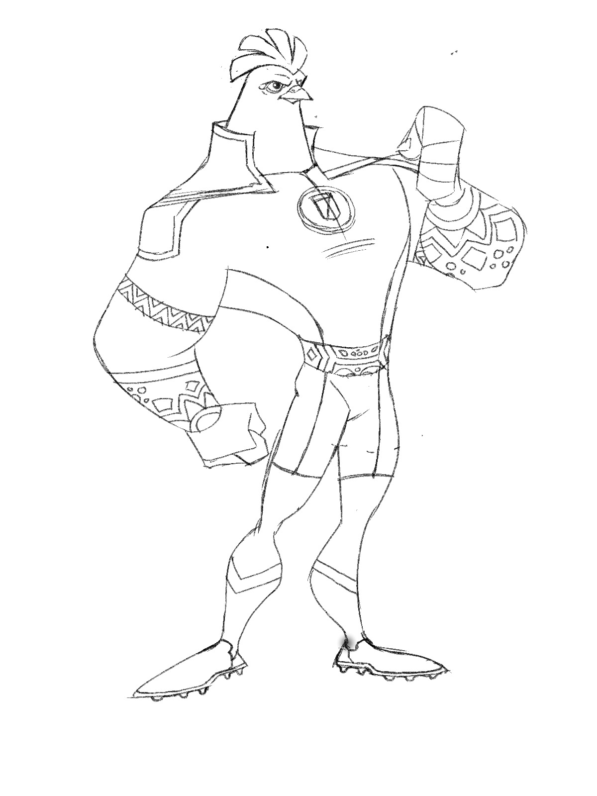
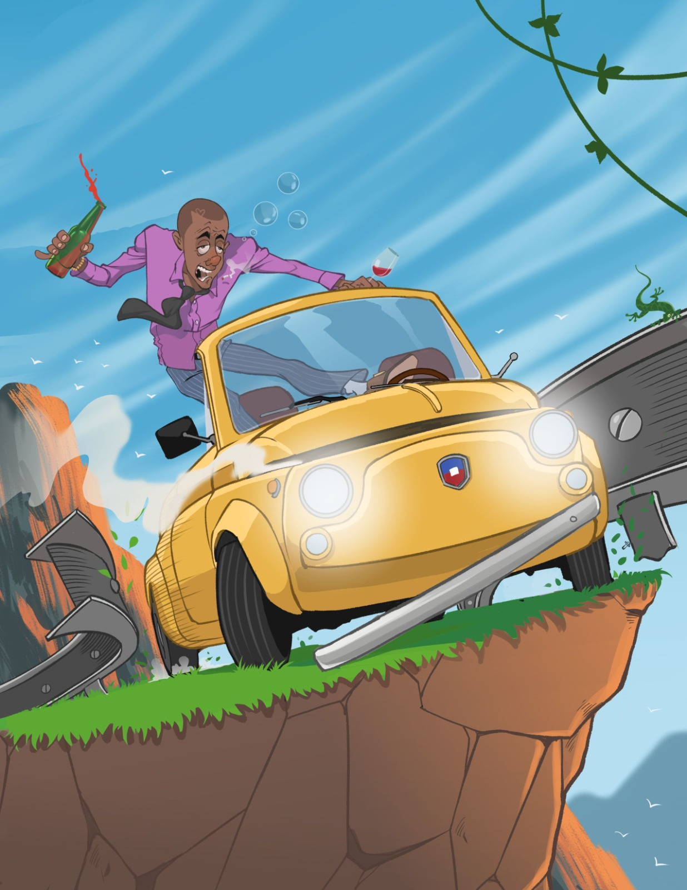
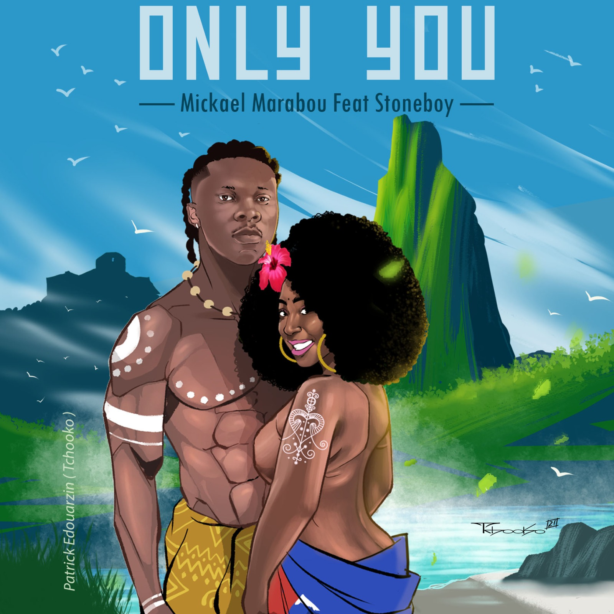
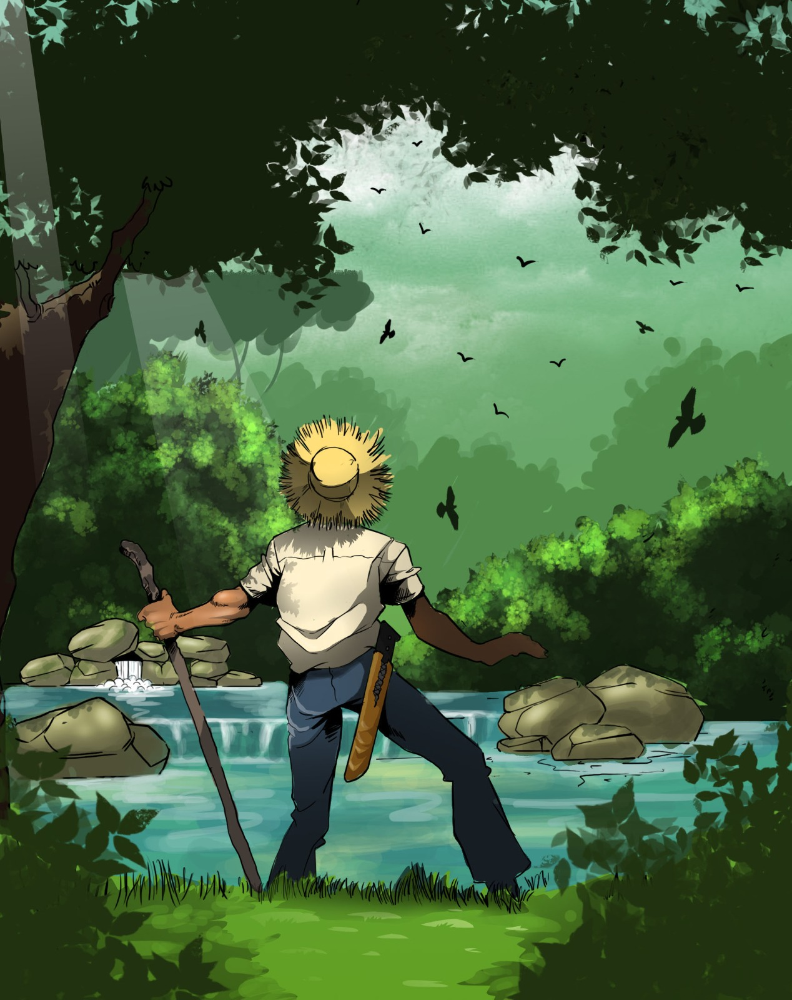
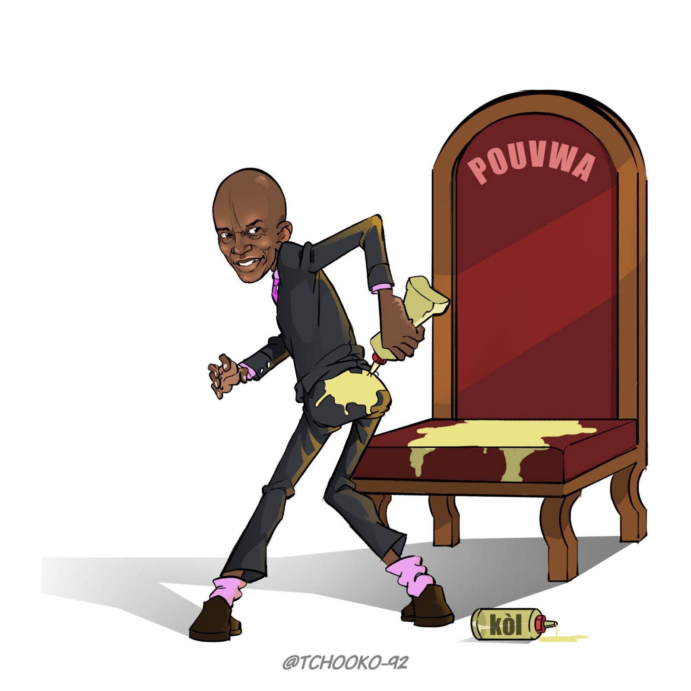
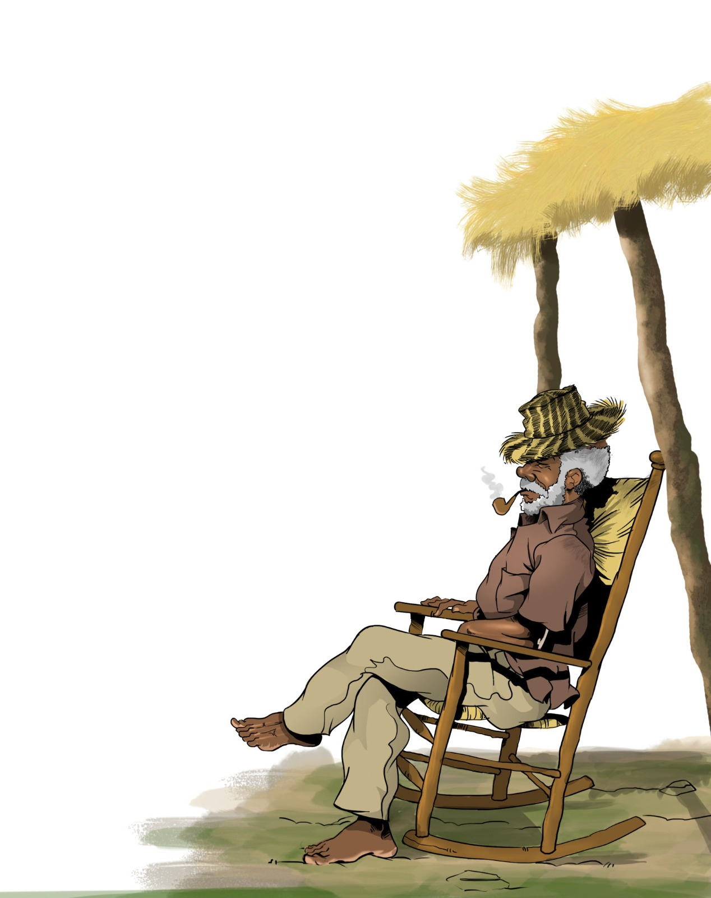
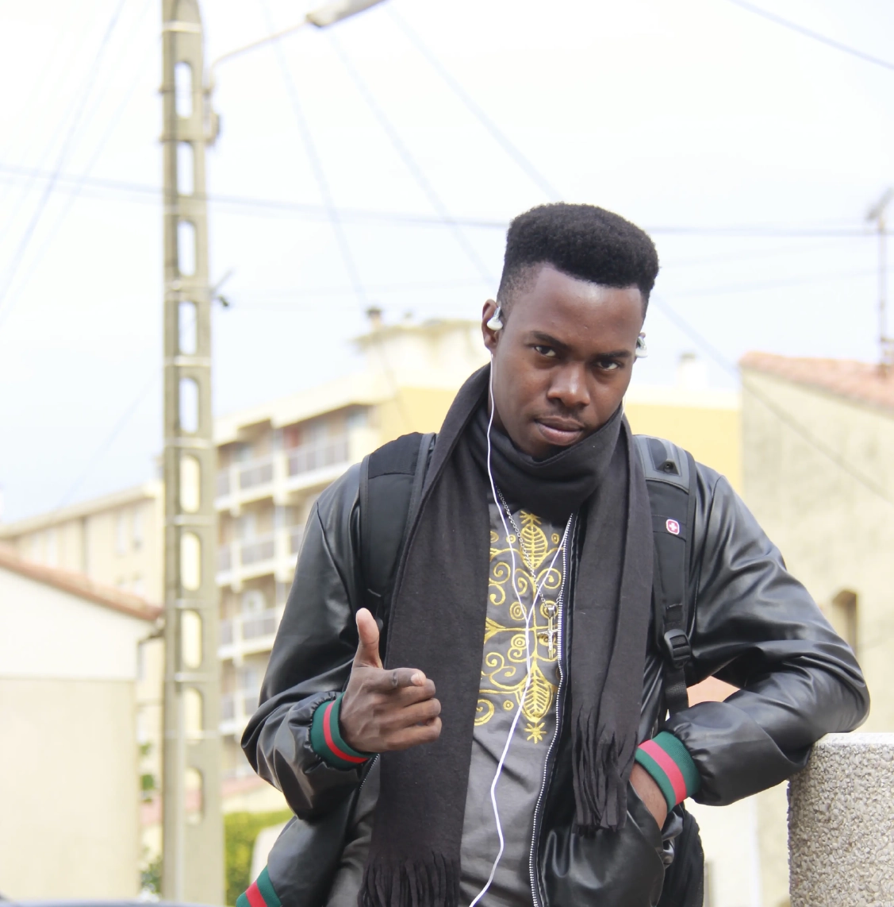
Mon parcour
Patrick Edouarzin, né le 7 janvier 1992, est un artiste plasticien haïtien pluridisciplinaire spécialisé dans l’illustration, la bande dessinée, le design graphique, la caricature, le graffiti et l’animation 2D. Passionné par le dessin, la bande dessinée et l’univers de l’animation, il développe une pratique artistique centrée sur la narration visuelle, l’imaginaire et la richesse culturelle haïtienne.
Au cours de son parcours, il a collaboré avec plusieurs institutions, organisations et entreprises reconnues, notamment l’Ambassade du Canada, l’OIM, Juno7, l’AFD, Publigestion, UrbAyiti, CPUCUAC et Pyepoudre, ainsi qu’avec la marque Prestige. Ces différentes collaborations lui ont permis de mettre son expertise artistique au service de projets culturels, institutionnels, éditoriaux et publicitaires. Son parcours est également marqué par plusieurs distinctions et expériences artistiques significatives, dont une résidence de création au Château de l’Esparou, en France. Cette expérience internationale s’inscrit dans une démarche de développement artistique et d’ouverture à de nouvelles perspectives de création.
En parallèle de sa pratique artistique, Patrick Edouarzin s’investit dans la transmission à travers l’animation d’ateliers de bande dessinée. Il est également le fondateur de Sketch, une startup dédiée à l’art graphique et à l’animation. À travers ses différentes initiatives et productions, il contribue au développement et au rayonnement de la création visuelle haïtienne, tout en affirmant une démarche artistique en constante évolution. Mon ambition artistique est aujourd’hui de perfectionner ma pratique de l’animation 2D afin de développer des œuvres plus abouties, capables de porter l’identité et l’imaginaire haïtiens au-delà des frontières. À long terme, je souhaite participer à des projets d’envergure qui utilisent le dessin animé comme un véritable moyen de transmission culturelle, afin de faire découvrir au public international l’histoire, les traditions, les personnages, les paysages et la richesse de la culture haïtienne. Mon objectif est de contribuer à la création d’un langage visuel haïtien capable de voyager à travers le monde et de raconter Haïti à travers des œuvres animées originales, accessibles et porteuses de sens.










